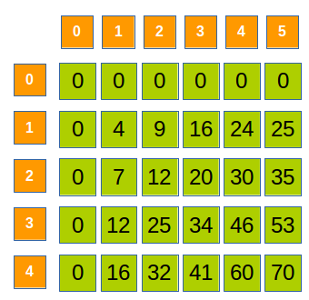

Considerăm un tabloul cu elemente numerice. În unele probleme se cere să determinăm rapid suma elementelor din anumite secvențe date. Desigur, o soluție este parcurgerea tuturor elementelor din secvență și determinarea sumei, dar această operație are complexitatea O(n), iar dacă numărul de sume care trebuie calculate este mare soluția poate fi inacceptabilă.
În asemenea situații putem folosi sumele parțiale.
Pentru matricea de mai sus, să calculăm suma elementelor din submatricea cu colțul stânga-sus la coordonatele (2,3) și colțul dreapta-jos la coordonatele (3,5). La fel ca în cazul vectorilor, considerăm, pentru simplitate, că liniile și coloanele matricei sunt indexate de la 1.
Parcurgerea element cu element a submatricei are complexitate O(n⋅m). Pentru o complexitate constantă considerăm matricea S[][] a sumelor parțiale, astfel:
S[i][j] – suma elementelor din submatricea cu colțul stânga-sus la coordonatele (1,1) și colțul dreapta-jos la coordonatele (i,j). Elementele de pe linia 0 și coloana 0 vor avea valoarea 0:
Odată construită această matrice, pentru determinarea sumei elementelor din submatricea cu colțul stânga-sus la coordonatele (is,js) și colțul dreapta-jos la coordonatele (ij,jj) vom folosi următoarea formulă:
Suma(is,js,ij,jj) = S[ij][jj] - S[is-1][jj] - S[ij][js-1] + S[is-1][js-1]
Matricea S[][] se construiește similar cu modul în care se determină suma din submatrice:
S[i][j]={0S[i−1][j]+S[i][j−1]–S[i−1][j−1]+A[i][j]dacă i=0 sau j=0,dacă i>0 și j>0.
Observație: Este posibil ca suma elementelor din matricea dată să depășească limita maximă a tipului de date folosit (ex. int), ceea ce duce la overflow. În acest caz, matricea S[][] trebuie declarată de un tip mai larg (ex. long long int).
Secventa CPP:
int n,m, A[1001][1001], S[1001][1001];
//citire n,m,A[][]
for(int i = 0 ; i <= n ; i ++)
S[i][0] = 0;
for(int j = 0 ; j <= m ; j ++)
S[0][j] = 0;
for(int i = 1 ; i <= n ; i ++)
for(int j = 1 ; j <= m ; j ++)
S[i][j] = S[i-1][j] + S[i][j-1] - S[i-1][j-1] + A[i][j];
int is,js; // coltul stanga sus
int ij,jj; // coltul dreapta jos
//citire is,js, ij,jj;
cout << S[ij][jj] - S[is-1][jj] - S[ij][js-1] + S[is-1][js-1];